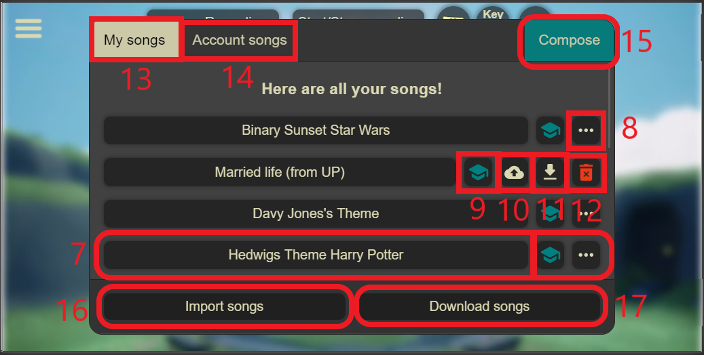
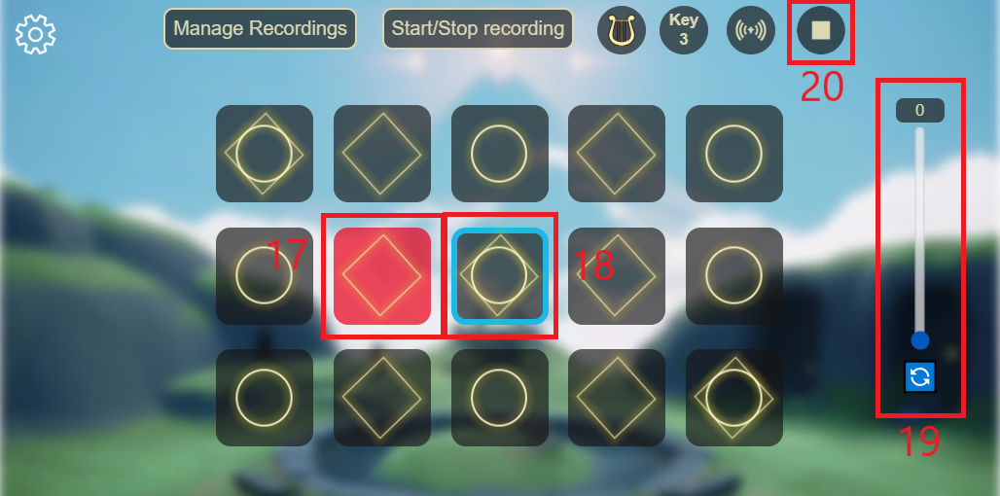

1: Keyboard.
2: To play/practice the songs you recorded.
3: To start and stop recording a song.
4: Instrument selection.
5: Pitch selection.
6: Cave mode (reverb).
7: Menu.

8: Play the song.
9: Delete the song.
10: Practice the song.
11: Save the song to your account.
12: Download the song.
13: Import a song file.
14: Download all the songs you saved.
15: Locally saved songs.
16: Songs saved in the account.

17: Note to press for the practice.
18: Note to press after the red note.
19: Slider to retry the songs. 20: Stop practice/playing song.